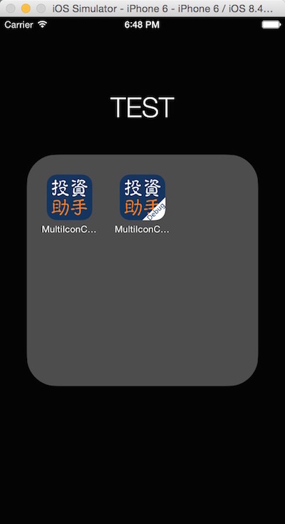

一般应用在开发阶段使用都是debug模式和测试服务器，而上线到AppStore后则使用release模式和线上服务器。开发者在发布一个新版本之前，一般会调成release模式和线上服务器再测试一遍，保证应用的稳定性。然而release模式和debug模式是一个Bundle ID，则这俩种模式共用一个沙盒目录，由于一般应用都会缓存一些用户信息在本地沙盒，那么在生成一个新模式的程序包时，需要把旧模式的程序包删掉，才能保证应用不会有异常。那么这样会对开发者带来不必要的麻烦。那能不能根据debug或者release模式动态修改Bundle ID，以保证沙盒目录的不同呢？答案是可以的。问题又来了，不同Bundle ID 就是俩个不同的应用，但是用的是同一个ICON，这样就区分不开二者了，那么能不能根据不同模式动态的加载不同ICON呢？答案也是可以的。
效果如下图所示。

- 首先 在
images.xcassets添加两个ICON的集命名分别问AppIcon和AppIconDebug。并把不同状态的ICON添加进去。如下两张图所示。
- 然后 在
TARGETS中的Build Settings中的Asset Catalog App Icon Set Name的Debug和Release中输入刚才添加的两个不同状态的ICON集的名字，如下图所示。
- 接着 点击
Editor=>Add Build Setting=>Add User-Defined Setting。如下图所示。
- 然后 在添加的
User-Defined中输入Bundle_identifier。并在Debug模式中输入com.xxxxx.app.debug,Release模式中输入com.xxxxx.app。如下图所示。
- 最后 修改
Custom iOS Target Properties中的Bundle identifier,在该行输入${Bundle_identifier}
把你的程序分别调成Debug和Release模式运行起来，看下效果吧。
源代码 下载